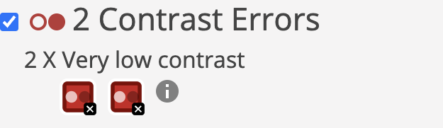

Accessibility
Her kan du finne informasjon om hvordan siden vår har tatt hensyn til brukere med fokus og testing på tilgjengelighet.
Hva vi fant ut ved hjelp av automatisk test
Det var ikke mange feil vi fikk når vi kjørte testen fra wave, dette var mye fordi vi hadde vært nøye med alt fra semantisk hiearki, tekst-størrelser og alternative tekster til bildene. Men de feilene vi fikk handla om kontraster. Det var to forskjellige plasse på sidene våre hvor kontrasten ikke var tilstrekkelig for universell utforming, nemlig brødteksten i Hero-seksjonen og alle lenkene på topical-siden.
Måten vi løste dette var ved å endre bakgrunn og forgrunnsfargene i Hero-seksjonen slik at det var mer enn nok kontrast. Det samme gjaldt lenkene som vi fikk feil på., hvor vi endra bakgrunnen litt og deretter oppnådde målene med god margin.
Den andre feilen vi fikk gitt ut på at vi hadde to lenker direkte etter hverandre som leda til samme plass. Her var det logoen og “hjem”-knappen som begge linka til index-siden. Siden skjermleser må navigere gjennom alle lenker, fjerna vi den første slik at det blir mindre duplikat for dem.
Valgene vi tok for å gjøre nettsiden universalt utformet
De litt mer overordnede valgene vi tok før vi i det hele tatt begynte å kode, var at vi ønsket en viss struktur som gikk gjennom hele siden. Dette gjelder navigasjon, hero og ikke minst footer. Disse skulle være omtrentlig likt utformet, men bare litt anderledes tekst. En annen ting vi hadde fokus på, var å ha undermenyer på siden slik at man kan utnytte snarveier for å komme til hvor man vil på sidene. Dette gjorde vi ikke på alle sidene, men på dem med lengst innhold og størst struktur.
En siste ting vi lagde som gjør siden enda mer universelt utformet, er en “skip to main content” link. Dette er en lenke som ikke er synlig, men er den første lenka man kommer til når man trykker “tab” på siden. Denne gjør at skjermlesere ikke trenger å trykke gjennom hele navigasjonen hver gang man skal lese en ny side.